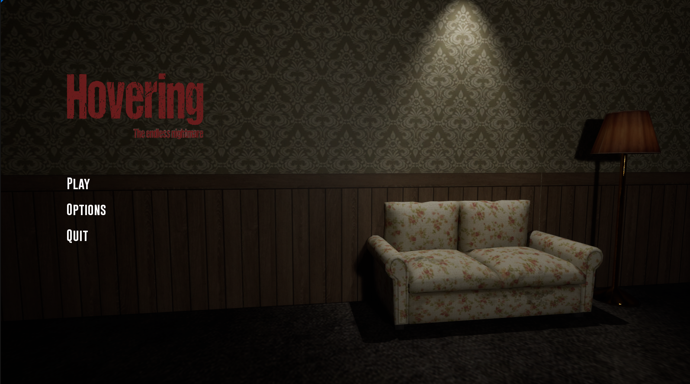
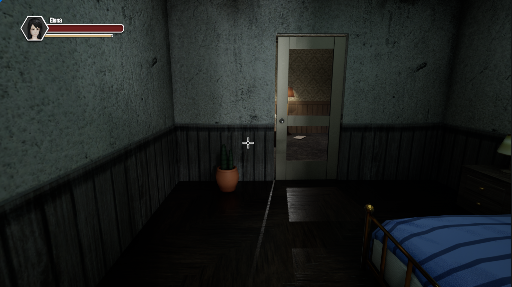
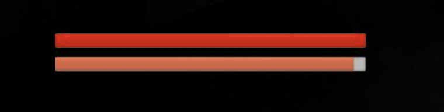
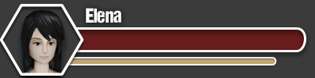
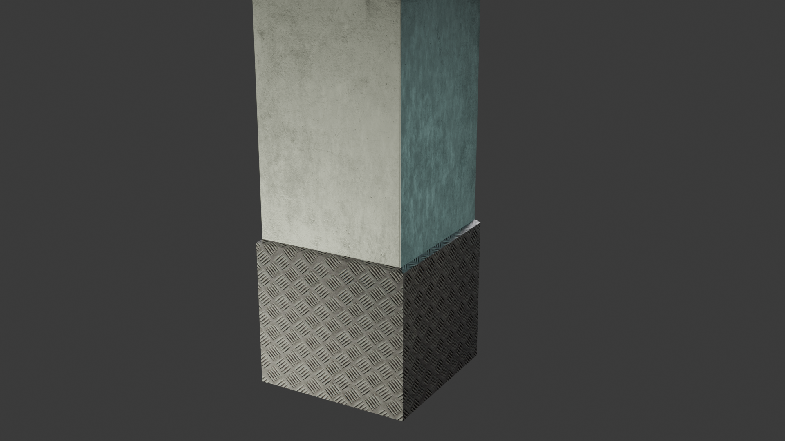
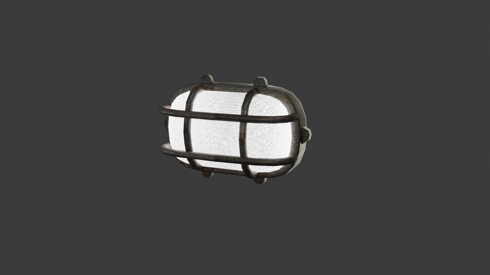
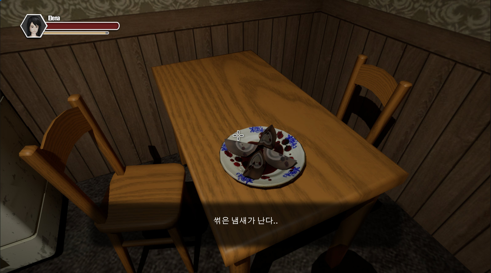

2주차 진행상황
UI개선- 1.메인메뉴

Hovering 게임 시작 화면이다. 타이틀과 플레이 옵션 나가기 버튼이 자리해있다.
마우스를 가져다대면 버튼이 빨갛게 활성화된다
2. 캐릭터의 스테이터스 창
플레이어 캐릭터인 Elena의 체력, 스테미나를 확인할 수 있다.
상태창 Before(왼쪽) / After(오른쪽)
 캐릭터 스텟창 확대
3.지하실 프랍 제작 중
Basement
< 기둥 Column >

< 지하실 조명 Lamp >
4. 다이얼로그 시스템 추가
특정오브젝트를 조사하면 주인공의 시선에서 해석된 문구가 표시되어 몰입감을 강화한다.